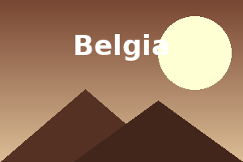

|
Schi la Bansko, de la 15 euro/persoană/noapte |
|
Litoralul pentru toți Vezi detalii |
AUSTRIAȚara muzicii și a sporturilor de iarnă. Munți, lacuri și orașe pline de istorie. DETALII |
BAHAMASUn arhipelag cu peste 700 de insule, cu plaje de nisip fin și apă turcoaz. DETALII |
 |
BELGIAO țară mică, aproape de Paris, Londra și Amsterdam, bogată în orașe medievale. DETALII |
||
BULGARIASituată în inima Balcanilor, cu capitala la Sofia. Oferă munți și stațiuni la mare. DETALII |
CEHIAȚară din centrul Europei, cu Praga drept capitală și orașe vechi pline de castele. DETALII |
CIPRUInsulă la răscrucea dintre Europa, Africa și Asia, destinație de vacanță pe tot anul. DETALII |
|||
CROAȚIAO țară care atrage prin coasta Adriaticii, insule numeroase și orașe istorice. DETALII |
CUBACel mai mare stat insular din Caraibe, cu orașe colorate, mașini de epocă și muzică. DETALII |
EGIPTȚara piramidelor și a Nilului, cu istorie veche și stațiuni la Marea Roșie. DETALII |